本文最后更新于：2023年10月11日 上午
debugger
vscode中Ctrl+shift+P调出控制面板：
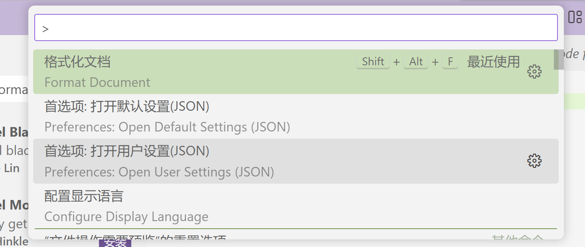
创建vue+vite+ts项目：
选择Vue和TypeScript：
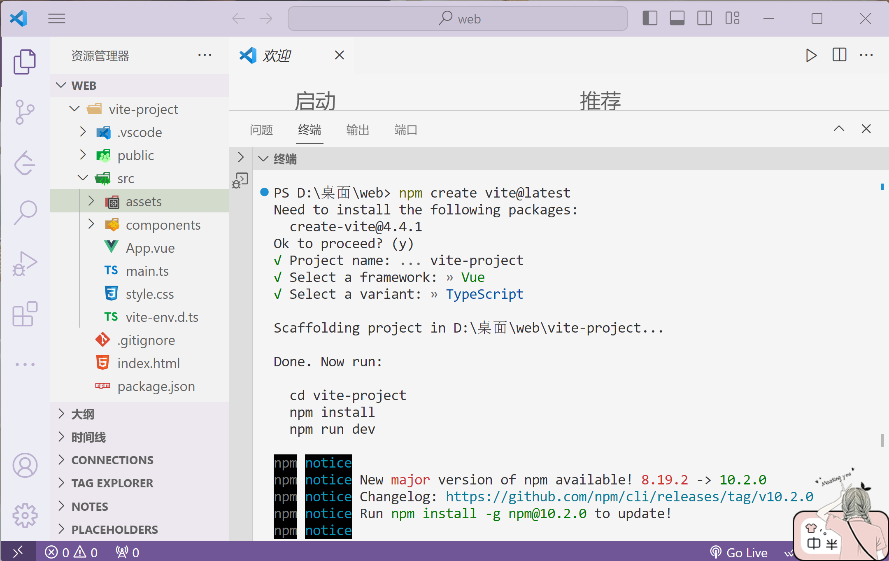
1 2 3 cd vite-project
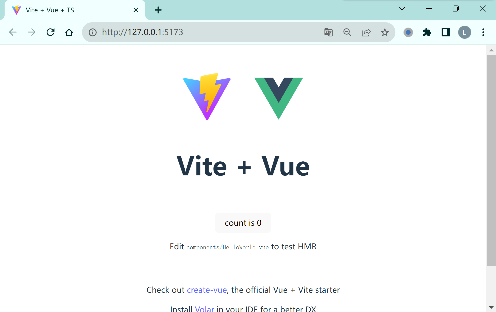
index.html中修改网站图标和标题：
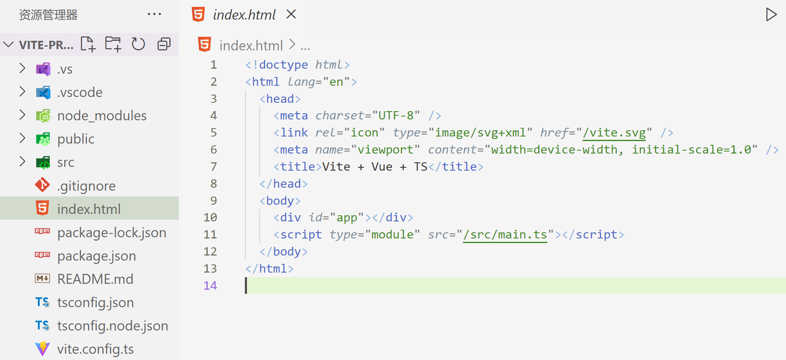
Vue代码模板：
1 2 3 4 5 6 7 8 9 10 11 <script setup lang="ts">
在vscode管理中点击用户代码片段code snippets：文件→首选项→Configure Use Snippets→New Global Snippets file→输入名称
借助https://snippet-generator.app/生成代码即可：
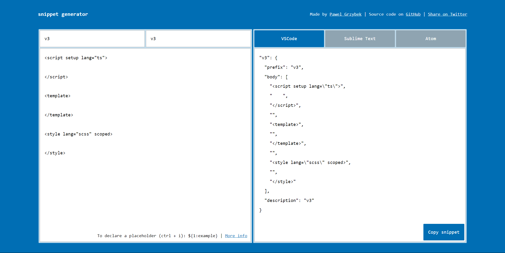
注意要加上{}
1 2 3 4 5 6 7 8 9 10 11 12 13 14 15 16 17 18 19 {"v3" : {"prefix" : "v3" ,"body" : ["<script setup lang=\"ts\">" ," " ,"</script>" ,"" ,"<template>" ,"" ,"</template>" ,"" ,"<style lang=\"scss\" scoped>" ,"" ,"</style>" "description" : "v3"
在文件中使用：v3回车
vs code插件：
TypeScript Vue Plugin(Volar)
Vue Language Features(Volar)
Prettier-Code formatter
px2rem
Auto Close Tag
Auto Complete Tag
Auto Rename Tag
Path Intellisense
vscode-icons
el-form表单二次封装：
1 2 3 4 5 6 7 8 <el-form ref ="form" label-width ="50px" label-position ="top" size ="mini" v-if ="accessInfo.isOwner" > <el-form-item label ="起始节点" > <el-select > <el-option > </el-option > </el-select > </el-form-item > <el-form-item label ="结束节点" > <el-select > <el-option > </el-option > </el-select > </el-form-item > </el-form >
→
1 2 3 4 5 6 7 8 <Form ref ="form" :formObj ="formObj" :formData ="formData" :labelWidth ="50" :labelPosition ="'top'" :size ="'mini'" v-if ="accessInfo.isOwner" > <template #fromid > <el-select v-model ="formData.fromid" > <el-option > </el-option > </el-select > </template > <template #toid > <el-select v-model ="formData.toid" > <el-option > </el-option > </el-select > </template > </Form >
1 2 3 4 5 6 7 8 9 10 11 12 13 14 15 16 17 18 19 20 21 22 23 24 25 26 27 28 <script>
1 2 3 4 5 6 7 8 9 10 11 12 13 14 15 16 17 18 19 20 <el-form-item label ="名称" > <el-input v-model ="formData.name" :maxlength ="60" > </el-input > </el-form-item > <el-form-item label ="描述" > <el-input type ="textarea" v-model ="formData.desc" :maxlength ="200" :rows ="5" > </el-input > </el-form-item > <el-form-item label ="类型" > <el-select v-model ="formData.type" placeholder ="请选择类型" disabled style ="wdith:100%" > <el-option label ="HIVE" :value ="0" > </el-option > <el-option label ="SQL" :value ="1" > </el-option > </el-select > </el-form-item > <el-form-item label ="数据库" > <el-select filterable v-model ="formData.hiveDatabase" @change ="formData.table=''" placeholder ="请选择数据库" > <el-option :label ="item.database" :value ="item.database" :key ="index" v-for ="(item,index) in hiveDatabaseList" > </el-option > </el-select > </el-form-item >
→
1 2 3 4 5 6 7 8 9 10 11 12 13 14 15 16 17 18 19 20 21 22 23 24 25 26 27 28 29 30 31 32 33 34 35 36 37 38 39 40 41 42 43 formObj :[input : true ,label : '名称' ,prop : 'name' ,maxlength : 60 ,inputStyle : 'width: 100%' textarea : true ,label : '描述' ,prop : 'desc' ,maxlength : 200 ,inputStyle : 'width: 100%' ,autosize : {minRows : 5 }select : true ,label : '类型' ,placeholder : '请选择类型' ,prop : 'type' ,maxlength : 200 ,disabled : true ,inputStyle : 'width: 100%' ,options : [label : 'HIVE' ,value : 0 label : 'SQL' ,value : 1 searchSelect : true ,label : '数据库' ,prop : 'hiveDatabase' ,options : [],placeholder : '请选择数据库'
1 2 3 4 5 6 <el-form :model ="ruleForm" :rules ="rules" ref ="ruleForm" > <el-form-item label ="项目名称" prop ="name" > <el-input v-model ="ruleForm.name" size ="mini" :placeholder ="isSharedProject==0 ? '请输入共享项目名称' : '请输入本地项目名称'" > </el-input > </el-form-item > </el-form >
→
1 2 <Form :formObj ="formObj" :formData ="ruleForm" :rules ="rules" ref ="ruleForm" > </Form >
1 2 3 4 5 6 7 8 9 10 11 12 13 14 15 16 17 18 19 20 21 22 23 24 25 26 27 28 29 30 31 32 33 34 35 36 37 38 39 <script>
1 2 3 4 5 6 <el-form :model ='formData' size ='mini' ref ='formNode' > <el-form-item v-for ='item in formList' :key ='item.key' :label ='item.desc' :prop ='item.key' :rules ='item.rules' > <el-input v-model ='formData[item.key]' type ='textarea' :placeholder ="`Type-${(item.type}\nFormat -JSON`" > </el-input > </el-form-item > </el-form >
→
1 2 <Form :formObj="formObj" :formData="formData" :size="'mini'" ref="formNode">
1 2 3 4 5 6 7 8 9 10 11 12 13 14 15 16 17 18 19 20 21 22 23 24 25 26 27 28 29 30 31 32 33 <script>
二.LLM Vite 在 Vite 中，defineConfig 是一个函数，用于定义和导出 Vite 的配置。它主要用于创建一个合法的配置对象，以供 Vite 使用。
报错：找不到模块“path”或其相应的类型声明
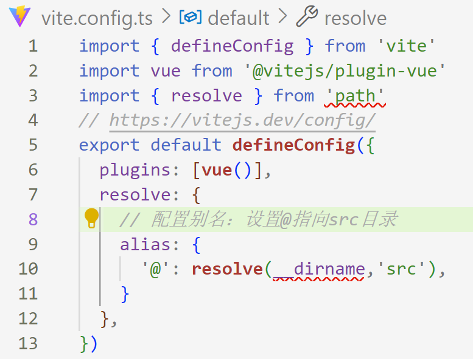
因为path模块是node.js内置的功能，但是node.js本身并不支持typescript，所以直接在typescript项目里使用是不行的。
解决方法：安装@types/node
1 npm install @types/node --save-dev
控制台警告：[Vue warn]: Failed to resolve component: router-link
If this is a native custom element, make sure to exclude it from component resolution via compilerOptions.isCustomElement.
at < App >
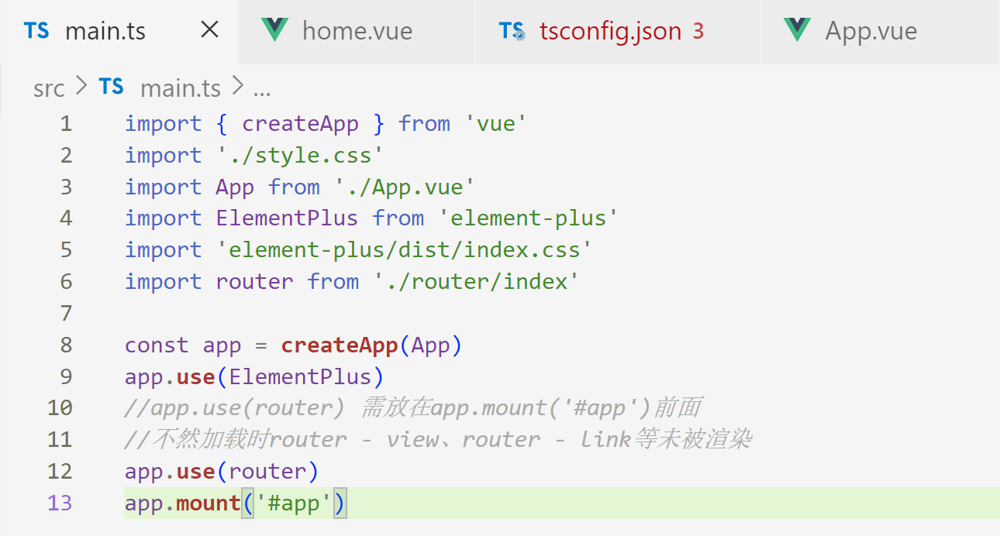
报错：找不到模块“@/views./home.vue'或其相应的类型声明
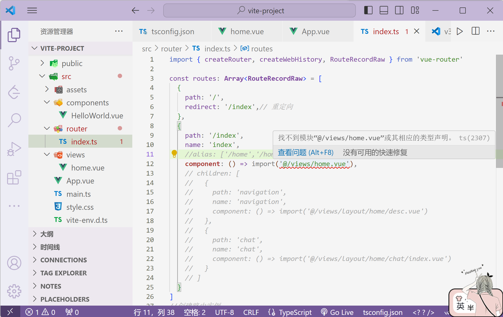
tsconfig.json文件中加入：
1 2 3 4 "baseUrl" : "." ,"paths" : {"@/*" : ["./src/*" ]
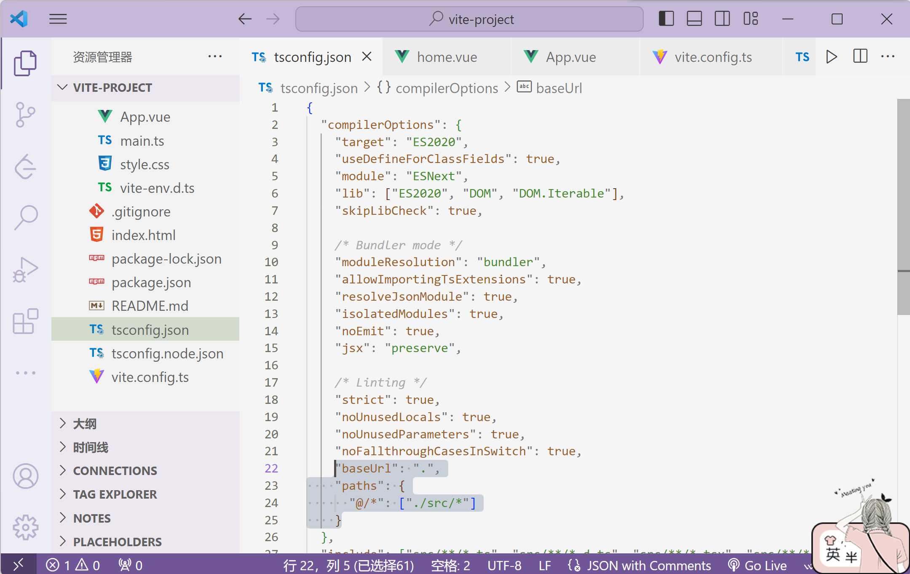
然后重启项目即可。
修改端口号 ，使用localhost访问
在vite.config.ts添加：
1 2 3 4 5 6 server : {port : 8080 ,host : true ,open : true , https : false ,
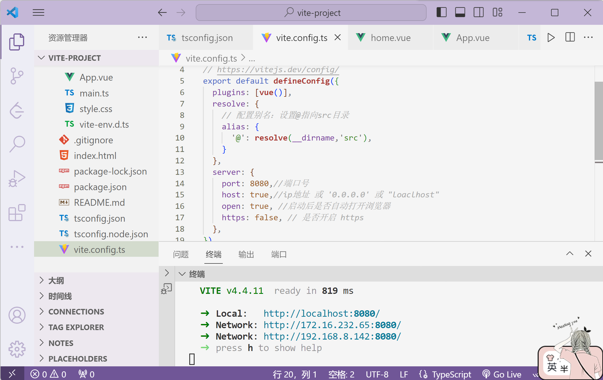
<router-view />是用于呈现路由组件的占位符。当你使用 Vue Router 进行页面导航时，它会根据当前路由配置加载相应的组件，并将其渲染到 <router-view /> 中。
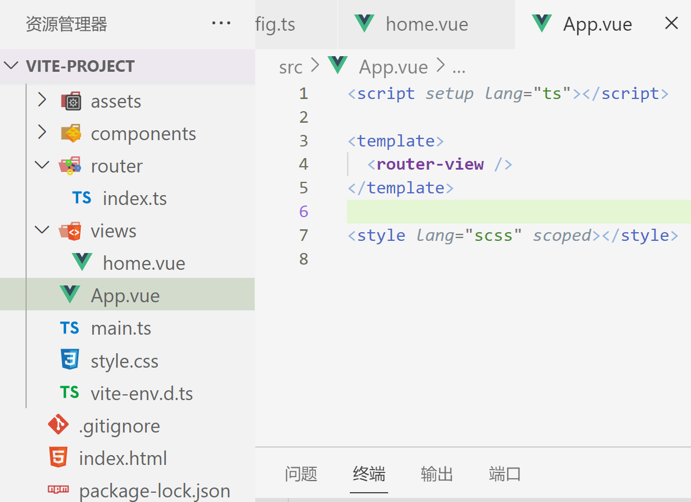
报错：Preprocessor dependency "sass"not found
解决方法：npm install -D sass
路由 安装：
1 npm install vue-router -S
src文件夹下创建 router 文件夹，创建 index.ts 文件：
1 2 3 4 5 6 7 8 9 10 11 12 13 14 15 16 17 18 19 20 21 22 23 24 25 26 27 28 29 30 31 32 33 34 35 36 37 38 39 40 41 42 43 44 45 46 47 48 49 50 51 52 53 54 55 import { createRouter, createWebHistory, RouteRecordRaw } from 'vue-router' const routes : Array <RouteRecordRaw > = [path : '/' ,redirect : '/auditAnswer/navigation' ,path : '/auditAnswer' ,name : 'auditAnswer' ,component : () => import ('@/views/layout/home/index.vue' ),children : [path : 'navigation' ,name : 'navigation' ,component : () => import ('@/views/layout/home/desc.vue' ) path : 'chat' ,name : 'chat' ,component : () => import ('@/views/layout/home/chat/index.vue' ) path : '/auditSQL' ,redirect : '/auditSQL/navigation' ,path : '/auditSQL' ,name : 'auditSQL' ,children : [path : 'navigation' ,name : 'navigation2' ,component : () => import ('@/views/layout/sql/sqldesc.vue' ) path : 'sql' ,name : 'sql' ,component : () => import ('@/views/layout/sql/index.vue' ) const router = createRouter ({history : createWebHistory (),export default router
在 main.ts 中引入并注册：
1 2 3 4 5 6 import { creatApp } from 'vue' import App from './App.vue' import router from './router/index' import store from './store/index' const app=creatApp (App )use (router).use (store)
跳转404页面：在src文件夹下的views文件夹创建NotFound文件夹，创建index.vue。
1 2 3 4 5 6 7 8 9 10 11 12 13 14 15 16 <script setup lang="ts">
scr/router/index.ts：
1 2 3 4 5 6 7 8 9 10 11 12 import NotFound from '@/view/NotFound/404.vue' const routes : Array <RouteRecordRaw > = [path : '/:pathMatch(.*)' ,redirect : '/404' ,path : '/404' ,name : '404' ,component : NotFound
使用一个自定义组件 router-link 来创建链接。这使得 Vue Router 可以在不重新加载页面的情况下更改 URL，处理 URL 的生成以及编码：
1 2 3 4 5 6 7 8 9 10 11 12 13 14 15 16 <script src ="https://unpkg.com/vue@3" > </script > <script src ="https://unpkg.com/vue-router@4" > </script > <div id ="app" > <h1 > Hello App!</h1 > <p > <router-link to ="/" > Go to Home</router-link > <router-link to ="/about" > Go to About</router-link > </p > <router-view > </router-view > </div >
router-view 将显示与 url 对应的组件。你可以把它放在任何地方，以适应你的布局。
1 2 3 4 5 6 7 8 9 10 11 12 13 14 <script lang="ts" setup>
将给定匹配模式的路由映射到同一个组件。例如，我们可能有一个 User 组件，它应该对所有用户进行渲染，但用户 ID 不同。在 Vue Router 中，我们可以在路径中使用一个动态字段来实现，我们称之为路径参数 ：
1 2 3 4 5 6 7 8 9 const User = {template : '<div>User</div>' ,const routes = [path : '/users/:id' , component : User },
现在像 /users/johnny 和 /users/jolyne 这样的 URL 都会映射到同一个路由。
==路径参数用冒号 : 表示==。当一个路由被匹配时，它的params的值将在每个组件中以 this.$route.params 的形式暴露出来。因此，我们可以通过更新 User 的模板来呈现当前的用户 ID：
1 2 3 const User = {template : '<div>User {{ $route.params.id }}</div>' ,
编程式导航
想要导航到不同的 URL，可以使用 router.push 方法。这个方法会向 history 栈添加一个新的记录，所以，当用户点击浏览器后退按钮时，会回到之前的 URL。
当你点击 <router-link> 时，内部会调用这个方法，所以点击 <router-link :to="..."> 相当于调用 router.push(...) ：
声明式
编程式
<router-link :to="...">router.push(...)
该方法的参数可以是一个字符串路径，或者一个描述地址的对象。例如：
1 2 3 4 5 6 7 8 9 10 11 12 13 14 push ('/users/eduardo' )push ({ path : '/users/eduardo' })push ({ name : 'user' , params : { username : 'eduardo' } })push ({ path : '/register' , query : { plan : 'private' } })push ({ path : '/about' , hash : '#team' })
注意 ：如果提供了 path，params 会被忽略，上述例子中的 query 并不属于这种情况。取而代之的是下面例子的做法，你需要提供路由的 name 或手写完整的带有参数的 path ：
1 2 3 4 5 6 7 8 9 const username = 'eduardo' push (`/user/${username} ` ) push ({ path : `/user/${username} ` }) push ({ name : 'user' , params : { username } }) push ({ path : '/user' , params : { username } })
当指定 params 时，可提供 string 或 number 参数（或者对于可重复的参数可提供一个数组）。任何其他类型（如 undefined、false 等）都将被自动字符串化 。对于可选参数，你可以提供一个空字符串（""）来跳过它。
由于属性 to 与 router.push 接受的对象种类相同，所以两者的规则完全相同。
router.push 和所有其他导航方法都会返回一个 Promise ，让我们可以等到导航完成后才知道是成功还是失败。
div设置圆角边框：
1 2 3 4 div {border : 1px solid #000 ; border-radius : 10px ;
设置水平垂直居中：
使用 Flexbox：
1 2 3 4 5 .container {display : flex;justify-content : center; align-items : center;
在上述代码中，父容器 .container 需要具有一定的高度和宽度，并且设置为 display: flex;。通过设置 justify-content: center; 和 align-items: center; 可以将子元素水平和垂直居中。
使用绝对定位和 transform：
1 2 3 4 5 6 7 8 9 10 .container {position : relative;.centered-element {position : absolute;top : 50% ;left : 50% ;transform : translate (-50% , -50% );
在上述代码中，父容器 .container 需要设置为 position: relative;，然后在要居中的子元素上添加 .centered-element 类。通过设置 top: 50%;、left: 50%; 和 transform: translate(-50%, -50%); 可以将子元素水平和垂直居中。
<el-col> 是 Element UI 库中的栅格布局组件，用于创建响应式的网格系统。通过使用 :xs、:sm、:md、:lg 和 :xl 这些属性，可以定义在不同屏幕尺寸下 <el-col> 元素所占据的列数。
对于你提供的代码 <el-col :xs="8" :sm="6" :md="4" :lg="3" :xl="1">，这表示在不同屏幕尺寸下，列元素 <el-col> 分别占据的列数。具体设置如下：
:xs="8"：在超小屏幕设备（<768px 宽度）下，该列元素占据 8 列的宽度。:sm="6"：在小屏幕设备（≥768px 宽度）下，该列元素占据 6 列的宽度。:md="4"：在中等屏幕设备（≥992px 宽度）下，该列元素占据 4 列的宽度。:lg="3"：在大屏幕设备（≥1200px 宽度）下，该列元素占据 3 列的宽度。:xl="1"：在超大屏幕设备（≥1920px 宽度）下，该列元素占据 1 列的宽度。
这些属性值代表了 <el-col> 元素在不同屏幕尺寸下所占据的相对宽度比例。
父组件中引用子组件：
1 2 3 4 5 6 7 8 9 <script setup lang="ts">
要实现上下两栏固定，中间栏自适应的布局：
1 2 3 4 5 6 7 8 9 10 11 12 13 14 15 16 17 18 19 20 21 22 23 24 <style > .container { display : flex; flex-direction : column; height : 100vh ; } .header , .footer { flex : 0 0 50px ; background-color : #ccc ; } .content { flex : 1 ; background-color : #f0f0f0 ; } </style > <div class ="container" > <div class ="header" > 上栏内容</div > <div class ="content" > 中栏内容</div > <div class ="footer" > 下栏内容</div > </div >
.container 是一个具有 Flex 布局的容器，它的 flex-direction 属性被设置为 column，使子元素按垂直方向排列。
.header 和 .footer 类分别表示上栏和下栏，它们都设置了固定的高度（这里为 50px），通过 flex: 0 0 50px 指定不可伸缩、初始大小为 50px。
.content 类表示中栏，它的 flex 属性被设置为 1，表示它会占据剩余的所有空间，从而实现自适应的效果。
要修改 <el-input> 组件的 placeholder 字体大小，你可以使用 CSS 来覆盖默认样式。下面是一种常用的方法：
1 2 3 4 5 6 7 8 9 10 11 12 13 14 <template>
要在 <el-input> 输入框内的右侧放置一个图片，你可以使用输入框的附加内容（append）来实现。
1 2 3 4 5 6 7 <template>
div里包裹三个p设置div为flex布局，前两个p在一排，第三个p在第二排：如果你想在 <div> 中包裹三个 <p> 元素，并设置前两个 <p> 元素在一行显示，第三个 <p> 元素在第二行，可以通过使用 CSS 的 Flex 布局来实现。
1 2 3 4 5 6 7 8 9 10 11 12 13 14 15 16 17 18 19 20 21 22 <template>
通过将 .container 类的 display 属性设置为 flex，并设置 flex-wrap 属性为 wrap，可以让容器内的元素自动换行。
然后，我们给每个 <p> 元素设置了宽度。在示例中，前两个 <p> 元素的宽度被设置为容器宽度的一半（50%），而第三个 <p> 元素的宽度被设置为整个容器的宽度（100%）。
这样，前两个 <p> 元素会在一行显示，而第三个 <p> 元素会独占一行。
设置文本折行：
1 2 3 4 5 6 7 8 9 10 11 <template>
使用了 word-wrap: break-word 样式来实现单词过长时自动换行。
在父组件内容被撑大出现滚动条时，如何让子组件始终固定在父组件的右下角：父组件div设置position:relative;，子组件div设置position:absolute;bottom:40px;right:0;。
点击上箭头按钮返回页面顶部：
1 2 3 4 5 6 7 8 9 10 11 12 13 14 15 16 <script setup lang="ts">
将元素 a 的滚动位置设置为它的内容的高度：
1 a.scrollTop =a.scrollHeight
要设置不同el-tree层级的图标不同，你可以通过判断节点的层级来动态地为每个层级设置不同的图标。
1 2 3 4 5 6 7 8 9 10 11 12 13 14 15 16 17 18 19 20 21 22 23 24 25 26 <template>
要在树形结构的各个层级之间添加间隙，你可以使用 CSS 的 margin 属性来实现。
1 2 3 4 5 6 7 8 9 10 :deep .el-tree{.el-tree-node__children {.el-tree-node__content {margin-top :10px ;.el-tree-node__children {padding-left :10px ;
要设置每个 el-table-column 的宽度占比，你可以使用 width 属性配合百分比来实现。
1 2 3 4 5 6 7 8 9 10 11 12 13 14 15 16 17 18 19 <template>
设置el-table滚动：
1 <el-table :data ="tableData" max-height ="200" > </el-table >
设置el-table-column的字体颜色：
1 2 3 4 5 6 7 8 9 10 11 12 13 14 15 16 17 18 19 20 21 22 23 <template>
父组件向子组件传值
父组件：
1 2 3 4 5 <template>
子组件：
1 2 3 4 5 6 7 8 9 10 11 12 13 14 15 <template>
子组件向父组件传值
子组件：
1 2 3 4 5 6 7 8 9 10 11 12 <template>
父组件：
1 2 3 4 5 6 7 8 9 10 11 12 13 14 15 <template>
【暂时未生效】provide inject传值
1 2 3 4 5 6 7 8 9 10 11 12 <template>
接收方组件：
1 2 3 4 5 6 7 8 9 10 11 <template>
鼠标悬浮到el-table的某行后在该行的第一列显示出加号：
1 2 3 4 5 6 7 8 9 10 11 12 13 14 15 16 17 18 19 20 21 22 23 24 25 26 27 28 29 30 31 32 33 34 35 36 <template>
要在 el-table 的最后一行中插入一个 el-select：
1 2 3 4 5 6 7 8 9 10 11 12 13 14 15 16 17 18 19 20 21 22 23 24 <template>
自定义el-button禁用时的click事件：
1 2 3 4 5 6 7 8 9 10 11 12 13 14 15 16 17 18 <template>
trim() 是 字符串的内置函数，用于删除字符串的首尾空格：
1 2 3 4 const str = ' Hello, World! ' ;const trimmedStr = str.trim ();console .log (trimmedStr);
Proxy对象的[[TARGET]]:Array(4)，怎么获取到这个数组：toRaw(tmp)
随机生成id：可以使用 UUID（Universally Unique Identifier）或 GUID（Globally Unique Identifier）。这些是用于生成全局唯一标识符的算法。在 中，可以使用第三方库 uuid 来生成 UUID。
首先，确保你已经安装了 uuid 库。可以使用 npm 包管理器运行以下命令进行安装：
安装完成后，可以使用以下代码生成一个完全不重复的随机 ID：
1 2 3 4 5 6 7 8 9 const { v4 : uuidv4 } = require ('uuid' );function generateUniqueId (const uniqueId = uuidv4 ();return uniqueId;const id = generateUniqueId ();console .log (id);
上述代码中，uuid 库的 v4 方法被引入并命名为 uuidv4。generateUniqueId 函数使用 uuidv4 方法来生成一个完全不重复的随机 ID。
每次调用 generateUniqueId 函数时，都会生成一个全局唯一的 ID。这是由 UUID 算法的特性决定的。
1 2 3 4 5 import {useRouter} from 'vue-router' const $router=useRouter ()const handleClick =(value:string )=>{push ({name :'chat' ,query :{uuid,question :value}})
即在url后添加chat?uuid=111&question=你是谁?
当你刷新页面时，页面的值消失的原因可能是因为数据没有被正确地保存或恢复。
在 Web 开发中，浏览器提供了 localStorage 和 sessionStorage 这两个 API 来存储数据。这些 API 允许你在页面之间保持持久的数据存储或会话级别的数据存储。
如果页面的值在刷新后消失，可能是因为你没有正确地使用这些存储机制。
localStorage：localStorage 是一个持久性存储，数据将在浏览器关闭后仍然保留。你可以使用 localStorage.setItem(key, value) 方法将值存储到 localStorage 中，并使用 localStorage.getItem(key) 方法检索值。sessionStorage：sessionStorage 是一个会话级别的存储，数据将在会话结束时被清除（当用户关闭标签页或浏览器窗口时）。你可以使用 sessionStorage.setItem(key, value) 方法将值存储到 sessionStorage 中，并使用 sessionStorage.getItem(key) 方法检索值。
请确保在存储值时使用正确的 API，并在页面加载时从存储中恢复值。例如，在加载页面时，你可以在 中使用以下代码来恢复 localStorage 中的值：
1 2 3 const storedValue = localStorage .getItem ('myVariable' );if (storedValue) {
这样，即使在刷新页面后，数据仍然可以从 localStorage 中获取并恢复。
JSON.stringify：将JavaScript对象或值转换为JSON字符串。
1 localStorage .setItem ('sqlArray' ,JSON .stringify (newSqlArray))
使用 watch 函数在每次响应式状态发生变化时触发回调函数：
1 2 3 4 5 6 7 8 9 10 11 12 13 14 15 16 17 18 19 20 <template>
在上述代码中，我们使用了 <script setup> 语法来定义组件的逻辑部分。在 <script setup> 中，我们导入了 ref 和 watch 函数，并使用 ref 创建了一个名为 count 的响应式变量，并初始化为 0。
我们还定义了一个名为 increment 的方法来增加 count 的值。在模板中，我们可以直接绑定 count 变量和 increment 方法。
最后，我们使用 watch 函数来观察 count 的变化，并在每次变化时输出日志。
watch 的第一个参数可以是不同形式的“数据源”：它可以是一个 ref (包括计算属性)、一个响应式对象、一个 getter 函数、或多个数据源组成的数组：
1 2 3 4 5 6 7 8 9 10 11 12 13 14 15 16 17 18 19 20 const x = ref (0 )const y = ref (0 )watch (x, (newX ) => {console .log (`x is ${newX} ` )watch (() => x.value + y.value ,(sum ) => {console .log (`sum of x + y is: ${sum} ` )watch ([x, () => y.value ], ([newX, newY] ) => {console .log (`x is ${newX} and y is ${newY} ` )
注意，你不能直接侦听响应式对象的属性值，例如：
1 2 3 4 5 6 const obj = reactive ({ count : 0 })watch (obj.count , (count ) => {console .log (`count is: ${count} ` )
这里需要用一个返回该属性的 getter 函数：
1 2 3 4 5 6 7 watch (() => obj.count ,(count ) => {console .log (`count is: ${count} ` )
直接给 watch() 传入一个响应式对象，会隐式地创建一个深层侦听器——该回调函数在所有嵌套的变更时都会被触发：
1 2 3 4 5 6 7 8 9 const obj = reactive ({ count : 0 })watch (obj, (newValue, oldValue ) => {count ++
相比之下，一个返回响应式对象的 getter 函数，只有在返回不同的对象时，才会触发回调：
1 2 3 4 5 6 watch (() => state.someObject ,() => {
你也可以给上面这个例子显式地加上 deep 选项，强制转成深层侦听器：
1 2 3 4 5 6 7 8 watch (() => state.someObject ,(newValue, oldValue ) => {deep : true }
深度侦听需要遍历被侦听对象中的所有嵌套的属性，当用于大型数据结构时，开销很大。因此请只在必要时才使用它，并且要留意性能。
即时回调的侦听器：watch 默认是懒执行的：仅当数据源变化时，才会执行回调。但在某些场景中，我们希望在创建侦听器时，立即执行一遍回调。举例来说，我们想请求一些初始数据，然后在相关状态更改时重新请求数据。
可以通过传入 immediate: true 选项来强制侦听器的回调立即执行：
1 2 3 watch (source, (newValue, oldValue ) => {immediate : true })
侦听器的回调使用与源完全相同的响应式状态是很常见的。例如下面的代码，在每当 todoId 的引用发生变化时使用侦听器来加载一个远程资源：
1 2 3 4 5 6 7 8 9 const todoId = ref (1 )const data = ref (null )watch (todoId, async () => {const response = await fetch (`https://jsonplaceholder.typicode.com/todos/${todoId.value} ` value = await response.json ()immediate : true })
特别是注意侦听器是如何两次使用 todoId 的，一次是作为源，另一次是在回调中。
我们可以用watchEffect函数来简化上面的代码。watchEffect() 允许我们自动跟踪回调的响应式依赖。上面的侦听器可以重写为：
1 2 3 4 5 6 watchEffect (async () => {const response = await fetch (`https://jsonplaceholder.typicode.com/todos/${todoId.value} ` value = await response.json ()
这个例子中，回调会立即执行，不需要指定 immediate: true。在执行期间，它会自动追踪 todoId.value 作为依赖（和计算属性类似）。每当 todoId.value 变化时，回调会再次执行。有了 watchEffect()，我们不再需要明确传递 todoId 作为源值。
对于这种只有一个依赖项的例子来说，watchEffect() 的好处相对较小。但是对于有多个依赖项的侦听器来说，使用 watchEffect() 可以消除手动维护依赖列表的负担。此外，如果你需要侦听一个嵌套数据结构中的几个属性，watchEffect() 可能会比深度侦听器更有效，因为它将只跟踪回调中被使用到的属性，而不是递归地跟踪所有的属性。
watchEffect仅会在其同步执行期间，才追踪依赖。在使用异步回调时，只有在第一个await正常工作前访问到的属性才会被追踪。
watch 和 watchEffect 都能响应式地执行有副作用的回调。它们之间的主要区别是追踪响应式依赖的方式：
watch只追踪明确侦听的数据源。它不会追踪任何在回调中访问到的东西。另外，仅在数据源确实改变时才会触发回调。watch 会避免在发生副作用时追踪依赖，因此，我们能更加精确地控制回调函数的触发时机。watchEffect会在副作用发生期间追踪依赖。它会在同步执行过程中，自动追踪所有能访问到的响应式属性。这更方便，而且代码往往更简洁，但有时其响应性依赖关系会不那么明确。
当你更改了响应式状态，它可能会同时触发 Vue 组件更新和侦听器回调。
默认情况下，用户创建的侦听器回调，都会在 Vue 组件更新之前 被调用。这意味着你在侦听器回调中访问的 DOM 将是被 Vue 更新之前的状态。
如果想在侦听器回调中能访问被 Vue 更新之后 的 DOM，你需要指明 flush: 'post' 选项：
1 2 3 4 5 6 7 watch (source, callback, {flush : 'post' watchEffect (callback, {flush : 'post'
后置刷新的 watchEffect() 有个更方便的别名 watchPostEffect()：
1 2 3 4 5 import { watchPostEffect } from 'vue' watchPostEffect (() => {
停止侦听器：在 setup() 或 <script setup> 中用同步语句创建的侦听器，会自动绑定到宿主组件实例上，并且会在宿主组件卸载时自动停止。因此，在大多数情况下，你无需关心怎么停止一个侦听器。
一个关键点是，侦听器必须用同步 语句创建：如果用异步回调创建一个侦听器，那么它不会绑定到当前组件上，你必须手动停止它，以防内存泄漏。例如：
1 2 3 4 5 6 7 8 9 10 11 <script setup>
要手动停止一个侦听器，请调用 watch 或 watchEffect 返回的函数：
1 2 3 4 const unwatch = watchEffect (() => {})unwatch ()
注意，需要异步创建侦听器的情况很少，请尽可能选择同步创建。如果需要等待一些异步数据，你可以使用条件式的侦听逻辑：
1 2 3 4 5 6 7 8 const data = ref (null )watchEffect (() => {if (data.value ) {
handler函数也常用于watch和computed等功能中，用于监听数据变化并进行相应的处理。handler函数通常接受两个参数：
newVal：表示数据发生变化后的新值。
oldVal：表示数据发生变化前的旧值。
1 2 3 4 5 6 7 8 9 watch : {'obj.a' : {handler (newName, oldName ) {console .log ('obj.a changed' );immediate : true ,
前端报错Access to XMLHttpRequest at ' http ://10.114.49.20:8000/ private / knowledge / compl etion ' from origin ' http :// localhost :8085' has been bloc ked by CORS policy : Respons e to preflight request doesn ' t pass access control check : No ' Access- Control-Allow-Origin ' header is present on the requested resource：这个错误是由于浏览器的跨域安全策略（CORS）导致的。
CORS策略要求服务器在响应中添加特定的头部信息，以允许来自不同源（Origin）的请求访问资源。在你的错误信息中，报告了来自本地开发服务器（http://localhost:8085）对另一个域（http://10.114.49.20:8000）的请求被阻止了。
要解决这个问题，你可以尝试以下几种方法：
后端配置： 在 http://10.114.49.20:8000 的服务器端代码中，添加合适的响应头来允许跨域请求。具体而言，你需要在响应中添加 Access-Control-Allow-Origin 头，将其值设置为 http://localhost:8085。
使用代理： 如果你在开发环境中使用的是 Vite 或类似的工具，你可以尝试配置开发服务器的代理，将请求转发到正确的地址。在 Vite 中，你可以通过修改 vite.config.js 文件来配置代理，如下所示：
1 2 3 4 5 6 7 8 9 10 11 12 13 14 module .exports = server : {port : 4500 , proxy : {'/api' : {target : 'http://localhost:3001/' ,changeOrigin : true ,rewrite : (path ) => path.replace (/^\/api/ , '' )
这样，所有以 /private 开头的请求将被代理到 http://10.114.49.20:8000 地址。
修改前端开发服务器的地址： 如果你有权限更改后端服务器的配置，可以考虑将前端开发服务器的地址设置为与后端服务器相同的地址（例如 http://10.114.49.20:8000），这样就不存在跨域问题了。
使用 v-model 指令来实现 el-dialog 的显示和隐藏。这个指令可以让你双向绑定一个值，并自动更新该值的状态：
1 2 3 4 5 6 7 8 9 10 11 12 13 14 15 16 17 18 19 20 21 22 23 <template>
在上面的示例中，我们创建了一个名为 showDialog 的响应式变量，并将其初始值设为 false ，表示对话框默认是隐藏的。当点击按钮时，我们将 showDialog 的值设为 true ，对话框将显示出来。
通过使用 v-model="showDialog"，我们将 showDialog 的值与 el-dialog 组件的 visible 属性进行了绑定。当 showDialog 的值发生变化时，el-dialog 组件的显示状态也会相应地发生变化。
数组深拷贝：
使用 Array.from() 方法进行浅拷贝，再结合 map() 或者 JSON.parse(JSON.stringify()) 方法进行深拷贝：
1 2 3 4 5 6 7 8 const shallowCopy = Array .from (originalArray);const deepCopy1 = originalArray.map (item =>const deepCopy2 = JSON .parse (JSON .stringify (originalArray));
使用扩展运算符 ... 进行深拷贝：
1 const deepCopy = [...originalArray];
需要注意的是，上述方法在深拷贝过程中只适用于纯数据（例如字符串、数字、布尔值、对象和数组）。如果数组中的元素是引用类型（如对象），则仅拷贝了引用，而不是创建新的对象。如果需要完全复制对象及其嵌套属性，可以考虑使用第三方库如 lodash.cloneDeep()。
例如，在 Vue 3 组件中，你可以这样使用 lodash 进行深拷贝：
1 2 3 import cloneDeep from 'lodash/cloneDeep' ;const deepCopy = cloneDeep (originalArray);
请注意，深拷贝数组可能会导致性能问题，特别是对于包含大量数据的数组。在处理大型数据集时，请谨慎使用深拷贝。
url替换所有的空格：
1 <a :href ="handleDecode(item)" :style ="{textDecoration:'none'}" > </a >
1 2 3 4 5 const handleDecode =(item:string )=>{let decodeUrl='/api/' +decodeURIComponenr(item)let replaceUrl=decodeUrl.replace (/ /g ,'' )return replaceUrl
全局引入element plus：
1 npm i element-plus --save
element plus的分页 /page和Go to改为中文：
main.ts：
1 2 3 4 5 import ElementPlus from 'element-plus' import zhCn from 'elementplus/dist/locale/zh-cn.mjs' use (ElementPlus ,{locale : zhCn,
src文件夹下面新建element-plus.d.ts：
1 2 3 4 declare module 'element-plus/dist/locale/zh-cn.mjs' {const zhCn : any export default znCn
el-table滚动条到最底部：
1 <el-table ref ="tableRef" > </el-table >
1 2 3 4 const handleAdd =(nextTick (()=> tableRef.value .scrollTo (0 ,tableRef.value .$refs .bodyWrapper .scrollHeight )
设置el-button点击多次只触发一次方法：
1 2 3 4 5 6 7 8 9 10 11 12 13 14 15 16 17 18 <template>
el-tooltip的内容可滚动：
1 2 3 4 5 6 7 8 9 10 <el-tooltip :enterable ="true" :popper-style ="{width: px2rem('400')}" :popper-options ="{modifies:{preventOverflow:{boundariesElement:'window'}}}" > <div slot ="content" > </div > <template #content > <p :style ="{maxHeight:px2rem('350'),overflowY: 'scroll',lineHeight:px2rem('25')}" > </p > </template > </el-tooltip >
svg-icon：
在 components 目录下新建 SvgIcon.vue 文件
1 2 3 4 5 6 7 8 9 10 11 12 13 14 15 16 17 18 19 20 21 22 23 24 25 26 27 28 29 30 31 32 33 34 35 36 37 38 39 40 41 42 43 <!-- src/components/SvgIcon.vue -->
在 main.ts 中全局注册：
1 2 3 4 5 6 7 import { createApp } from 'vue' import App from './App.vue' import SvgIcon from './components/SvgIcon/SvgIcon.vue' import './assets/iconfont/iconfont.js' ;createApp (App )component ('SvgIcon' , SvgIcon );mount ('#app' )
引入iconfont：在项目 assets 目录下新建 iconfont 目录，在该目录下新建 iconfont.js 文件，然后将 iconfont 在线地址中提供的代码全部复制过来。
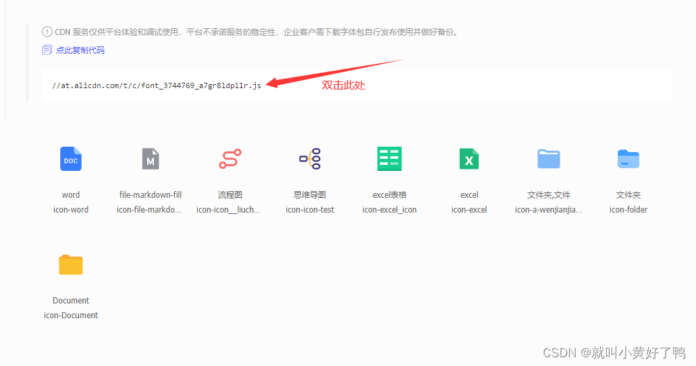
具体使用：
1 2 3 <template > <svg-icon iconName ="icon-gongzuoleixing" > </svg-icon > </template >
去除首尾空行：
1 <el-input v-model.trim ="inputText" > </el-input >